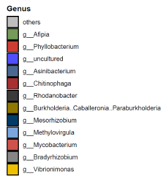
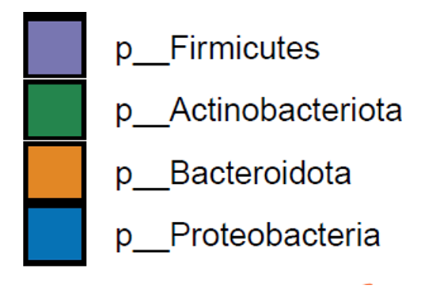
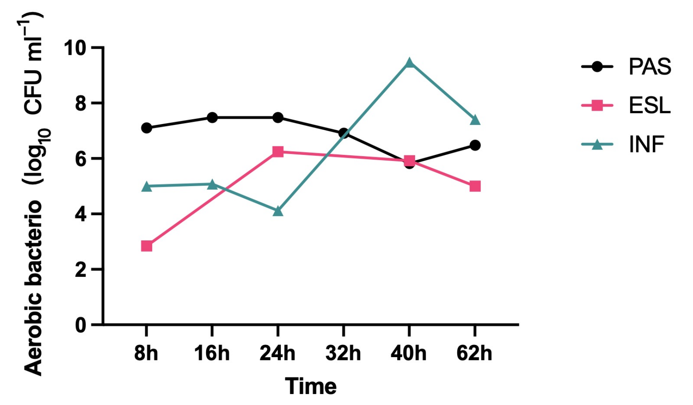
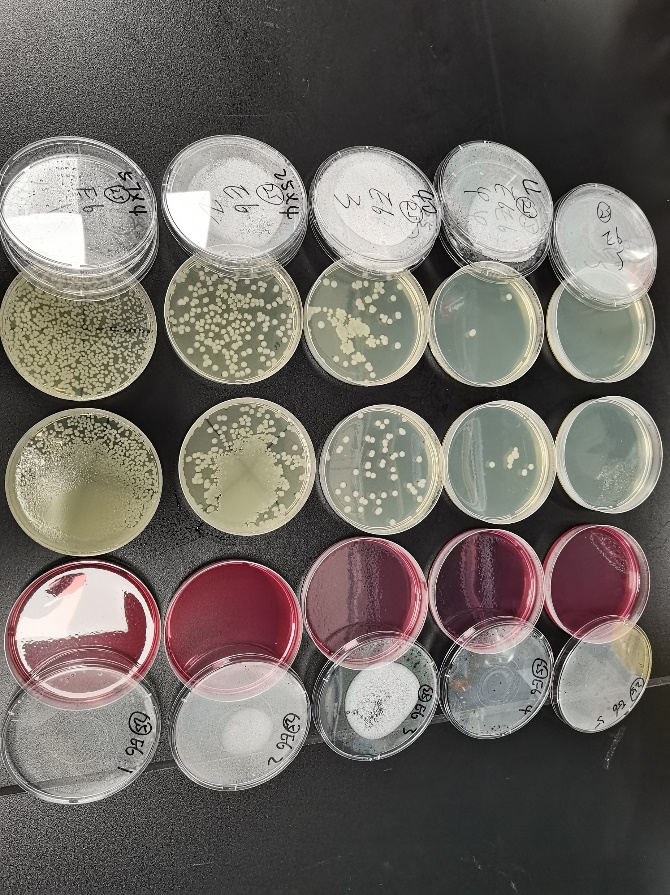
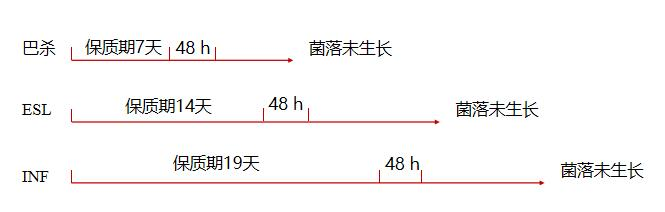
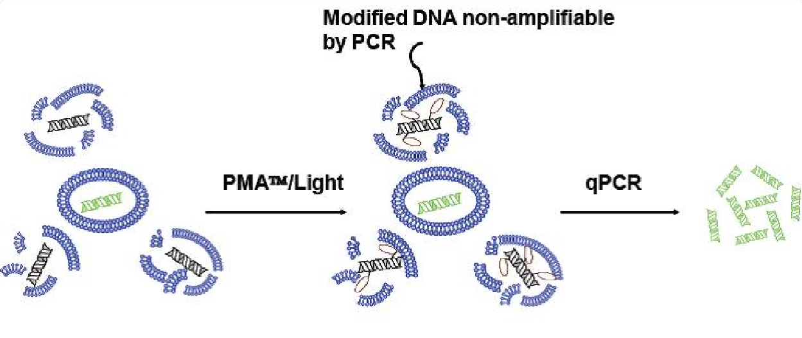

Result
研究结果
巴氏杀菌前后样品分别送测16S rRNA
 生牛乳中大量富集变形菌门，拟杆菌门和放线菌门微生物
生牛乳中大量富集弧菌属，根瘤菌属，分歧杆菌属微生物
25℃培养48 h的ESL杀菌乳
牛场中采集牛乳与巴氏杀菌乳微生物组成结构未发现显著差异
37℃实验结果 （PAS：巴氏杀菌乳； ESL：延长货架期的巴氏杀菌乳；INF：超瞬时杀菌乳）
结论：低温可有效抑制牛乳微生物的增殖
未来规划
16S rRNA无法分辨微生物的存活状态，无法反映杀菌效果
使用分子生物学方法（PCR检测抗性基因，qPCR结合叠氮溴化丙锭PMA染料对活菌进行扩增定量）
